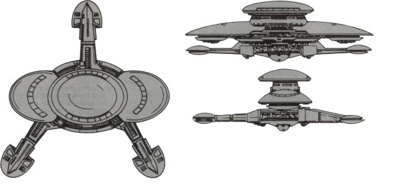

Z-4 Deathgame-type Space Station (KE)

Battle Stats
Reactors and Superstructure
Total Power Units - 160 (Primary Quantum Reactor - 120, Impulse Engines - 40)
MPR - 10/1
Superstructure - 72
Beam Weapons (Disruptors)
Max Power - 7
Firing Chart - U
Arcs - 6 per arc
Bonuses - +3(1-7) +2(8-15) +1(16-20)
Beam Weapons (Disruptors)
Max Power - 9
Firing Chart - H
Arcs - 3 per arc
Bonuses - +3(1-3) +2(4-8) +1(9-10)
Missile Weapons (Photon Torpedoes)
Power to Arm - 2
Damage - 20
Firing Chart - H
Arcs - 1 per arc
Deflector Shields
Max Shield Power - 18
SPR - 2/3